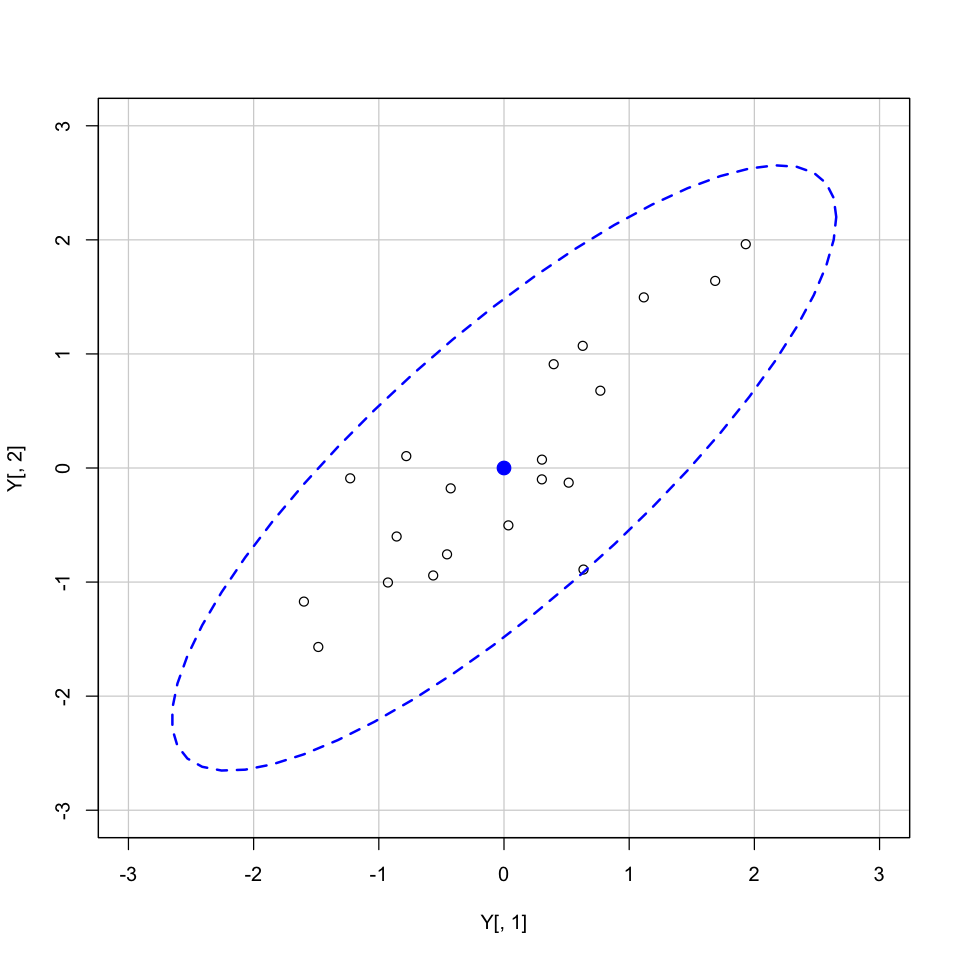
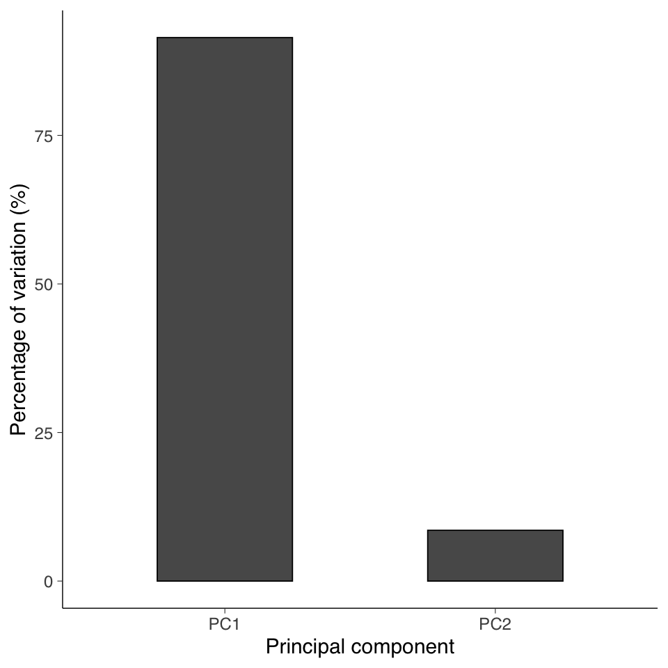
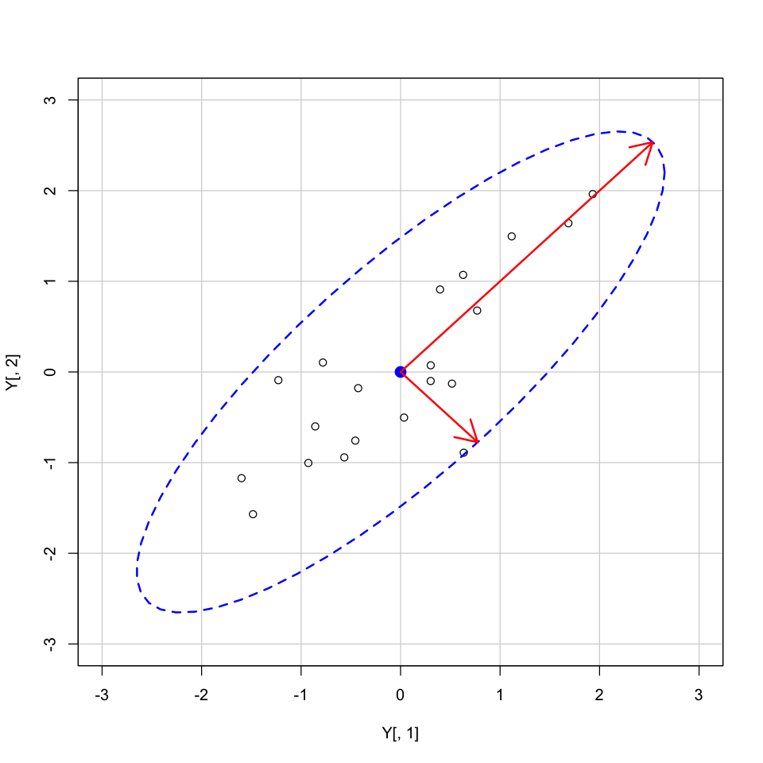
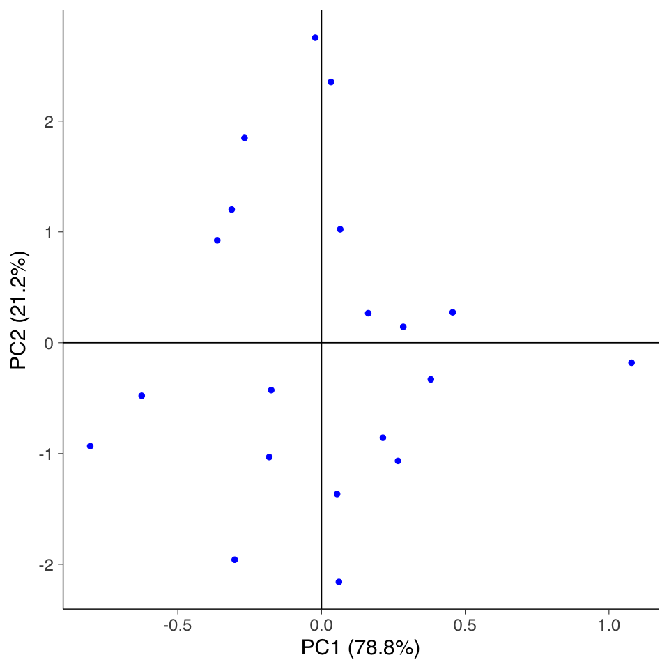

here::here("code", "_common.R") |>
source()
# Load packages
if (!requireNamespace("pacman")) install.packages("pacman")
pacman::p_load(car)Appendice D — Elementi di algebra lineare
L’analisi fattoriale è una tecnica di analisi multivariata e, perciò, richiede la comprensione di almeno alcuni concetti di base dell’algebra lineare. A livello minimale è necessario capire che cosa sono i vettori e le matrici, che cosa è il determinante di una matrice, e in che modo possano essere eseguite le operazioni algebriche su vettori e matrici. Questo Capitolo si pone l’obiettivo di chiarire le nozioni elencate sopra.
D.1 Vettori
D.1.1 Vettori nello spazio euclideo
Un vettore geometrico è un segmento orientato dotato di una lunghezza, una direzione e un verso. Spesso viene rappresentato con una freccia. Dato che i vettori non hanno posizione (ma solo direzione, verso e intensità), sono possibili rappresentazioni multiple dello stesso vettore. Nella discussione seguente, considereremo soltanto vettori che hanno origine nel punto (0, 0). Questo verrà chiarito dall’esempio seguente. La posizione di un punto nel piano può essere espressa nei termini di una coppia ordinata di numeri (\(x, y\)), le coordinate di quel punto. Tale coppia di valori rappresenta la distanza verticale dal punto a ciascuno degli assi coordinati.
Possiamo anche definire il punto \(P\) specificando la distanza e la direzione di \(P\) dall’origine, ovvero nei termini del vettore \(\overrightarrow{OP}\). A sua volta, questo vettore può essere espresso nei termini delle sue componenti nelle direzioni orizzontali e verticali:
\[ \overrightarrow{OP} = \left[ \begin{array}{c} 2\\ 3 \end{array} \right] \]
Se volessimo specificare un punto in uno spazio a 3 dimensioni, avremmo:
\[ \overrightarrow{OP} = \left[ \begin{array}{c} x\\ y\\ z \end{array} \right] \]
In generale, un punto \(P\) in uno spazio a \(n\)-dimensioni sarà specificato da:
\[ \overrightarrow{OP} = \left[ \begin{array}{c} v_1\\ v_2\\ \dots\\ v_n \end{array} \right] \]
Dal punto di vista geometrico, dunque, un vettore rappresenta un punto in uno spazio \(n\)-dimensionale.
In \(\mathsf{R}\), un vettore è definito come
a <- c(1, 3, 2)
a |> print()[1] 1 3 2df <- data.frame(
x = c(0, 3), # Start points for arrows
y = c(0, 1), # Start points for arrows
xend = c(2, 5), # End points for arrows
yend = c(3, 4) # End points for arrows
)
# Plot arrows using geom_segment with the updated 'linewidth' aesthetic
ggplot(df, aes(x = x, y = y)) +
geom_segment(aes(xend = xend, yend = yend),
arrow = arrow(length = unit(0.3, "cm")), linewidth = 1
) +
geom_hline(yintercept = 0, linetype = "dashed") +
geom_vline(xintercept = 0, linetype = "dashed")
D.1.2 Somma e differenza di vettori
La somma di due vettori è definita come
\[ (a_1, a_2) + (b_1, b_2) = (a_1 + b_1, a_2 + b_2). \]
In \(\mathsf{R}\) abbiamo
a <- c(1, 3, 2)
b <- c(2, 8, 9)
a + b |> print()[1] 2 8 9- 3
- 11
- 11
La differenza di due vettori è
\[ (a_1, a_2) - (b_1, b_2) = (a_1 - b_1, b_2 - b_2). \]
In \(\mathsf{R}\) abbiamo
a <- c(1, 3, 2)
b <- c(2, 8, 9)
a - b |> print()[1] 2 8 9- -1
- -5
- -7
D.1.3 Moltiplicazione scalare
La moltiplicazione scalare di un vettore per un numero reale (o scalare) è data da
\[ \rho (a_1, a_2) = (\rho a_1, \rho a_2) \]
Dal punto di vista geometrico, la moltiplicazione scalare effettua una estensione o contrazione del vettore \(\boldsymbol{a}\), preservandone la direzione.
In \(\mathsf{R}\) abbiamo
a <- 2
x <- c(2, 8, 9)
a * x |> print()[1] 2 8 9- 4
- 16
- 18
D.1.4 Combinazione lineare
Se \(\mathbf{v}_{1}, \dots, \mathbf{v}_{n}\) sono vettori e \(a_1, \dots, a_n\) sono scalari, allora la combinazione lineare di questi vettori con questi coefficienti scalari è data da
\[ {\displaystyle a_{1}\mathbf {v} _{1}+a_{2}\mathbf {v} _{2}+a_{3}\mathbf {v} _{3}+\cdots +a_{n}\mathbf {v} _{n}.} \] Per esempio, in \(\mathsf{R}\) possiamo aver
a <- c(2, 3, 4)
v1 <- c(2, 8, 3)
v2 <- c(4, 5, 1)
v3 <- c(1, 3, 2)
y <- a[1] * v1 + a[2] * v2 + a[3] * v3
y |> print()[1] 20 43 17D.1.5 Vettore 0 e vettore 1
Il vettore 0 è costituito da \(n\) elementi, tutti uguali a 0. Il vettore 1 è costituito da \(n\) elementi, tutti uguali a 1.
In \(\mathsf{R}\) abbiamo
x <- rep(0, 5)
x |> print()
y <- rep(1, 5)
y |> print()[1] 0 0 0 0 0
[1] 1 1 1 1 1D.1.6 Ortogonalità tra vettori
Due vettori si dicono ortogonali, e si scrive \(\boldsymbol{a} \bot \boldsymbol{b}\), se e solo se il loro prodotto scalare è nullo:
\[ \boldsymbol{a}'\boldsymbol{b} = 0. \]
In \(\mathsf{R}\) abbiamo
v1 <- c(1, 1)
v2 <- c(-1, 1)
sum(v1 * v2) |> print()[1] 0D.1.7 Trasposta di un vettore
In un vettore trasposto gli indici delle righe prendono il posto degli indici delle colonne, e viceversa.
In \(\mathsf{R}\) abbiamo
v1 <- c(1, 3, 7) %>%
as.matrix()
v1 |> print() [,1]
[1,] 1
[2,] 3
[3,] 7Le dimensioni di v1 sono
dim(v1)- 3
- 1
La trasposta di v1 è
v2 <- t(v1)
v2 |> print() [,1] [,2] [,3]
[1,] 1 3 7di dimensioni
dim(v2) |> print()[1] 1 3D.1.8 Norma o lunghezza di un vettore
Per il teorema di Pitagora, la norma di un vettore \((a_1, a_2)\) è \(\sqrt{a_1^2 + a_2^2}\) ed è denotata da \(\| (a_1, a_2) \|\). Infatti, se un vettore \(\boldsymbol{a}\) (l’ipotenusa) è la somma di due vettori ortogonali \(\boldsymbol{a}_1\) e \(\boldsymbol{a}_2\) (i cateti), allora la lunghezza al quadrato di \(\boldsymbol{a}\) è uguale alla somma dei quadrati delle lunghezze di \(\boldsymbol{a}_1\) e \(\boldsymbol{a}_2\).
Viene detta norma di \(\boldsymbol{a}\) la radice del prodotto scalare di un vettore per se stesso:
\[ \| \boldsymbol{a} \| = \sqrt{\boldsymbol{a}'\boldsymbol{a}}. \]
In \(\mathsf{R}\) abbiamo
sqrt(t(v1) %*% v1) |> print() [,1]
[1,] 7.681146D.2 Matrici
Una matrice costituisce un insieme rettangolare di scalari ordinati per riga e colonna. Può anche essere vista come la raccolta di \(m\) vettori colonna di dimensione \(n\) o come la raccolta di \(n\) vettori riga di dimensione \(m\). Per esempio:
\[ \boldsymbol{A} = \left[ \begin{array}{c c c} a_{11} & a_{12} & a_{13}\\ a_{21} & a_{22} & a_{23} \end{array} \right] \]
In \(\mathsf{R}\) abbiamo
M <- matrix(
c(1, 2, 3, 4, 5, 6),
ncol = 3,
byrow = FALSE)
M |> print() [,1] [,2] [,3]
[1,] 1 3 5
[2,] 2 4 6D.2.1 Dimensioni della matrice
I numeri interi \(m\) ed \(n\) si dicono dimensioni della matrice, ovvero \(\boldsymbol{A}\) si dice matrice di dimensioni \(m \times n\) o di ordine \(m \times n\). Nel caso presente, la matrice \(\boldsymbol{A}\) ha dimensioni \(2 \times 3\).
dim(M) |> print()[1] 2 3D.2.2 Matrice trasposta
Si definisce matrice trasposta di \(\boldsymbol{A}\), e si denota con \(\boldsymbol{A}'\) oppure \(\boldsymbol{A}'\), la matrice \(\boldsymbol{B} = \boldsymbol{A}'\) di ordine \(n \times m\) cui elementi sono:
\[ b_{ij} = a_{ji}, \quad i = 1 \dots m, j = 1 \dots n \]
Per esempio,
\[ \left[ \begin{array}{c c} -2 & 5\\ 3 & 1\\ 7 & -6 \end{array} \right]'= \left[ \begin{array}{c c c} -2 & 3 & 7\\ 5 & 1 & -6 \end{array} \right] \]
D.2.3 Matrice simmetrica
Se accade che \(\boldsymbol{A} = \boldsymbol{A}'\) allora la matrice è detta simmetrica.
\[ \boldsymbol{A} = \left[ \begin{array}{c c c} 7 & 1 & 2\\ 1 & 8 & 3\\ 2 & 3 & 9 \end{array} \right] \]
\((\boldsymbol{A} + \boldsymbol{B})' = (\boldsymbol{A})' + (\boldsymbol{B})'\)
\((\boldsymbol{A} - \boldsymbol{B})' = (\boldsymbol{A})' - (\boldsymbol{B})'\)
\((\boldsymbol{a} + \boldsymbol{b})' = (\boldsymbol{a})' + (\boldsymbol{b})'\)
\((\boldsymbol{a} - \boldsymbol{b})' = (\boldsymbol{a})' - (\boldsymbol{b})'\)
D.2.4 Matrice quadrata o rettangolare
Se \(m = n\) allora la matrice \(\boldsymbol{A}\) si dice quadrata di dimensione \(n\) o di ordine \(n\) altrimenti si dice rettangolare. Le righe di \(\boldsymbol{A}\) sono \([a_{11}\ a_{12}\ a_{13}]\) e \([a_{21}\ a_{22}\ a_{23}]\). Le colonne di \(\boldsymbol{A}\) sono \(\left[\begin{array}{c} a_{11} \\ a_{21} \end{array} \right]\), \(\left[ \begin{array}{c} a_{12} \\ a_{22} \end{array} \right]\) e \(\left[ \begin{array}{c} a_{13} \\ a_{23} \end{array} \right]\).
D.2.5 Diagonale principale
Se \(i\) e \(j\) sono numeri interi con \(1 \leq i \leq m\) e \(1 \leq j \leq n\) allora l’elemento della matrice \(\boldsymbol{A}\) di dimensione \(m \times n\) che si trova in posizione (\(i, j\)) viene indicato con \(a_{ij}\). Gli elementi \(a_{ij}\) di una matrice quadrata \(\boldsymbol{A}\) di ordine \(n\) tali che \(i = j\) sono detti elementi principali o diagonali e formano la cosiddetta diagonale principale di \(\boldsymbol{A}\).
\[ \boldsymbol{A} = \left[ \begin{array}{c c c} a_{11} & a_{12} & a_{13}\\ a_{21} & a_{22} & a_{23}\\ a_{31} & a_{32} & a_{33} \end{array} \right] \]
D.2.6 Matrice diagonale
Se gli elementi \(a_{ij}\) di una matrice quadrata \(\boldsymbol{A}\) sono tali che \(a_{ij} =0\) e \(a_{ii} \neq 0\), allora la matrice \(\boldsymbol{A}\) viene detta matrice diagonale.
\[ \boldsymbol{A} = \left[ \begin{array}{c c c} a_{11} & 0 & 0\\ 0 & a_{22} & 0\\ 0 & 0 & a_{33} \end{array} \right] \]
D.2.7 Matrice identità
Si definisce matrice identità di ordine \(n\) la matrice quadrata diagonale \(\boldsymbol{I}_n\) avente tutti gli elementi principali uguali a \(1\):
\[ \boldsymbol{I}_3 = \left[ \begin{array}{c c c} 1 & 0 & 0\\ 0 & 1 & 0\\ 0 & 0 & 1 \end{array} \right] \]
La matrice identità ha la stessa funzione del numero “1” nel sistema dei numeri reali.
D.2.8 Matrici diagonali e triangolari
Gli elementi di una matrice che si trovano al di sopra della diagonale principale sono detti sopradiagonali, mentre quelli che si trovano al di sotto della stessa diagonale principale sono detti sottodiagonali. Se una matrice ha tutti gli elementi sopradiagonali e sottodiagonali uguali a zero viene detta matrice diagonale. Se invece ha solo gli elementi sopradiagonali nulli allora viene detta triangolare inferiore. Se ha gli elementi sottodiagonali nulli allora è detta triangolare superiore.
D.2.9 Somma e sottrazione
La somma e la sottrazione di due matrici sono operazioni definite elemento per elemento. Per sommare due matrici sommiamo gli elementi corrispondenti. Per sottrarre due matrici sottraiamo gli elementi corrispondenti. Si noti che queste operazioni hanno senso solo se le due matrici hanno le stesse dimensioni (altrimenti queste operazioni non sono definite). Per esempio,
\[ \left[ \begin{array}{c c} -2 & 5\\ 3 & 1\\ 7 & -6 \end{array} \right]+ \left[ \begin{array}{c c} 3 & -2\\ 4 & 5\\ 10 & -3 \end{array} \right]= \left[ \begin{array}{c c} 1 & 3\\ 7 & 6\\ 17 & -9 \end{array} \right] \]
A <- matrix(
c(-2, 5, 3, 1, 7, -6), nrow = 3, byrow = TRUE
)
A |> print() [,1] [,2]
[1,] -2 5
[2,] 3 1
[3,] 7 -6B <- matrix(
c(3, -2, 4, 5, 10, -3), nrow = 3, byrow = TRUE
)
B |> print() [,1] [,2]
[1,] 3 -2
[2,] 4 5
[3,] 10 -3(A + B) |> print() [,1] [,2]
[1,] 1 3
[2,] 7 6
[3,] 17 -9\[ \left[ \begin{array}{c c} -2 & 5\\ 3 & 1\\ 7 & -6 \end{array} \right]- \left[ \begin{array}{c c} 3 & -2\\ 4 & 5\\ 10 & -3 \end{array} \right]= \left[ \begin{array}{c c} -5 & 7\\ -1 & -4\\ -3 & -3 \end{array} \right] \]
(A - B) |> print() [,1] [,2]
[1,] -5 7
[2,] -1 -4
[3,] -3 -3D.2.10 Moltiplicazione di scalari e matrici
L’effetto della moltiplicazione di una matrice \(\boldsymbol{A}\) di qualsiasi dimensione per un numero reale b (scalare) è quello di moltiplicare ciascun elemento in \(\boldsymbol{A}\) per b. Questo è equivalente a sommare \(\boldsymbol{A}\) a se stessa b volte. Per esempio,
\[ 3 \left[ \begin{array}{c c} -2 & 5\\ 3 & 1\\ 7 & -6 \end{array} \right]= \left[ \begin{array}{c c} -6 & 15\\ 9 & 3\\ 21 & -18 \end{array} \right] \]
(3 * A) |> print() [,1] [,2]
[1,] -6 15
[2,] 9 3
[3,] 21 -18D.2.11 Proprietà della somma e differenza
Siano \(A\), \(B\) e \(C\) matrici di dimensioni \(m \times n\), e siano \(k\) e \(p\) scalari appartenenti a un campo \(F\). Allora, valgono le seguenti proprietà:
\(A + B = B + A\) (commutatività)
\(A + (B + C) = (A + B) + C\) (associatività)
\(0 + A = A\) (0 è l’identità additiva)
\(A + (-A) = 0\) ( (-A) è l’inverso additivo di \(A\))
\(k(A + B) = kA + kB\) (la moltiplicazione scalare è distributiva rispetto all’addizione di matrici)
\((k + p)A = kA + pA\) (la moltiplicazione scalare è distributiva rispetto all’addizione di scalari)
\((kp)A = k(pA)\) (associatività della moltiplicazione scalare)
\(1A = A\) (la moltiplicazione per 1 preserva la matrice)
D.2.12 Moltiplicazione matrice-vettore
Sia \(A\) una matrice \(m \times n\) con colonne \(a_1, a_2, \dots, a_n\):
\[ A = \begin{bmatrix} a_{11} & a_{12} & \cdots & a_{1n} \\ a_{21} & a_{22} & \cdots & a_{2n} \\ \vdots & \vdots & \ddots & \vdots \\ a_{m1} & a_{m2} & \cdots & a_{mn} \\ \end{bmatrix} \]
e sia \(x\) un vettore colonna di dimensione \(n \times 1\), cioè \(x \in \mathbb{R}^n\):
\[ x = \begin{bmatrix} x_1 \\ x_2 \\ \vdots \\ x_n \end{bmatrix}. \]
Il prodotto matrice-vettore \(Ax\) è definito come la combinazione lineare delle colonne di \(A\) con i coefficienti dati dalle componenti di \(x\):
\[ Ax = x_1 a_1 + x_2 a_2 + \dots + x_n a_n = \sum_{j=1}^n a_{ij}x_j. \]
Interpretazione geometrica: La moltiplicazione di un vettore per una matrice può essere vista come una trasformazione lineare dello spazio.
Esempio: Consideriamo le matrici:
\[ A = \begin{bmatrix} 2 & -1 & 0 \\ 3 & 1/2 & \pi \\ -2 & 1 & 1 \\ 0 & 0 & 0 \end{bmatrix} \quad \text{e} \quad x = \begin{bmatrix} 2 \\ 1 \\ 2 \end{bmatrix}. \]
Allora:
\[ Ax = 2 \begin{bmatrix} 2 \\ 3 \\ -2 \\ 0 \end{bmatrix} + 1 \begin{bmatrix} -1 \\ 1/2 \\ 1 \\ 0 \end{bmatrix} + 2 \begin{bmatrix} 0 \\ \pi \\ 1 \\ 0 \end{bmatrix} = \begin{bmatrix} -3 \\ -5/2 + 2\pi \\ 5 \\ 0 \end{bmatrix}. \]
D.2.13 Prodotto di matrici
La moltiplicazione di matrici è un’operazione fondamentale in algebra lineare, ma richiede una certa attenzione. A differenza della somma, il prodotto di matrici non è commutativo e la sua definizione è un po’ più complessa.
Condizione di conformabilità: Due matrici \(\boldsymbol{A}\) e \(\boldsymbol{B}\) si dicono conformabili per il prodotto \(\boldsymbol{AB}\) se il numero di colonne di \(\boldsymbol{A}\) è uguale al numero di righe di \(\boldsymbol{B}\).
Definizione: Siano \(\boldsymbol{A}\) una matrice \(m \times p\) e \(\boldsymbol{B}\) una matrice \(p \times n\). Il prodotto \(\boldsymbol{C} = \boldsymbol{AB}\) è una matrice \(m \times n\) tale che:
\[ c_{ij} = \sum_{k=1}^{p} a_{ik}b_{kj}. \]
In altre parole, l’elemento \(c_{ij}\) di \(\boldsymbol{C}\) si ottiene moltiplicando gli elementi corrispondenti della i-esima riga di \(\boldsymbol{A}\) per gli elementi della j-esima colonna di \(\boldsymbol{B}\) e sommando i prodotti ottenuti.
Proprietà:
- Associatività: \((AB)C = A(BC)\).
- Non commutatività: In generale, \(AB \neq BA\).
- Distributività rispetto alla somma: \(A(B+C) = AB + AC\) e \((A+B)C = AC + BC\).
- Moltiplicazione per uno scalare: \(k(AB) = (kA)B = A(kB)\).
- Moltiplicazione per la matrice identità: Se \(I\) è la matrice identità, allora \(AI = A\) e \(IA = A\).
Ad esempio, siano \(\boldsymbol{A}\) e \(\boldsymbol{B}\) le seguenti matrici
\[ \left[ \begin{array}{c c c} -2 & 1 & 1\\ 1 & 1 & 4\\ 2 & -3 & 2 \end{array} \right] \quad \text{e} \quad \left[ \begin{array}{c c c} 3 & -2 &1\\ 4 & 5 & 0\\ 1 & -3 & 1 \end{array} \right] \]
Calcoliamo la matrice \(\boldsymbol{C} = \boldsymbol{AB}\). L’elemento \(c_{ij}\) è uguale alla somma dei prodotti degli elementi della i-esima riga di \(\boldsymbol{A}\) per la j-esima colonna di \(\boldsymbol{B}\).
\(c_{11} = (-2) \cdot 3 + 1 \cdot 4 + 1 \cdot 1 = -1\)
\(c_{12} = (-2) \cdot (-2) + 1 \cdot 5 + 1 \cdot (-3) = 6\)
\(c_{13} = (-2) \cdot 3 + 1 \cdot 0 + 1 \cdot 1 = -1\)
\(c_{21} = 1 \cdot 3 + 1 \cdot 4 + 4 \cdot 1 = 11\)
\(c_{22} = 1 \cdot (-2) + 1 \cdot 5 + 4 \cdot (-3) = -9\)
\(c_{23} = 1 \cdot 3 + 1 \cdot 0 + 4 \cdot 1 = 5\)
\(c_{31} = 2 \cdot 3 +(-3) \cdot 4 + 2 \cdot 1 = -4\)
\(c_{32} = 2 \cdot (-2) +(-3) \cdot 5 + 2 \cdot (-3) = -25\)
\(c_{33} = 2 \cdot 1 + (-3) \cdot 0 + 2 \cdot 1 = 4\)
In definitiva
\[ \boldsymbol{C} = \left[ \begin{array}{c c c} -1 & 6 & -1\\ 11 & -9 & 5\\ -4 & -25 & 4 \end{array} \right]. \]
Possiamo facilmente svolgere i calcoli precedenti in R nel modo seguente:
A = matrix(
c(-2, 1, 1, 1, 1, 4, 2, -3, 2),
nrow = 3,
byrow = TRUE
)
A |> print() [,1] [,2] [,3]
[1,] -2 1 1
[2,] 1 1 4
[3,] 2 -3 2B = matrix(
c(3, -2, 1, 4, 5, 0, 1, -3, 1),
nrow = 3,
byrow = TRUE
)
B |> print() [,1] [,2] [,3]
[1,] 3 -2 1
[2,] 4 5 0
[3,] 1 -3 1(A %*% B) |> print() [,1] [,2] [,3]
[1,] -1 6 -1
[2,] 11 -9 5
[3,] -4 -25 4Calcolando il prodotto \(\boldsymbol{D} = \boldsymbol{BA}\) si trova invece:
\[ \boldsymbol{D} = \left[ \begin{array}{c c c} -6 & -2 & -3\\ -3 & 9 & 24\\ -3 & -5 & -9 \end{array} \right] \]
da cui risulta evidente che \(\boldsymbol{AB} \neq \boldsymbol{BA}\).
(B %*% A) |> print() [,1] [,2] [,3]
[1,] -6 -2 -3
[2,] -3 9 24
[3,] -3 -5 -9D.2.14 Casi particolari
La matrice identità è l’elemento neutro per il prodotto, cioè se \(\boldsymbol{I}\) è una matrice \(n \times n\) si ha
\[ \boldsymbol{A} \boldsymbol{I}_n = \boldsymbol{I}_n \boldsymbol{A} = \boldsymbol{A}. \]
Per esempio,
\[ \boldsymbol{IA} = \left(% \begin{array}{cc} 1 & 0 \\ 0 & 1 \\ \end{array}% \right) \left(% \begin{array}{ccc} 2 & 3 & -1 \\ 1 & 4 & 7 \\ \end{array}% \right)= \left(% \begin{array}{ccc} 2 & 3 & -1 \\ 1 & 4 & 7 \\ \end{array}% \right). \]
In R la matrice identità si crea nel modo seguente.
print(diag(2)) [,1] [,2]
[1,] 1 0
[2,] 0 1Dunque
A <- matrix(
c(2, 3, -1, 1, 4, 7),
nrow = 2, byrow = TRUE
)
A |> print() [,1] [,2] [,3]
[1,] 2 3 -1
[2,] 1 4 7(diag(2) %*% A) |> print() [,1] [,2] [,3]
[1,] 2 3 -1
[2,] 1 4 7(A %*% diag(3)) |> print() [,1] [,2] [,3]
[1,] 2 3 -1
[2,] 1 4 7Un secondo caso particolare si verifica quando una matrice è costituita da un’unica colonna o un’unica riga. Se la matrice \(\boldsymbol{A}\) si riduce ad una sola colonna (o una sola riga) e viene detta vettore colonna (o riga) ad \(m\) elementi o componenti. Un vettore colonna è una matrice \(n \times 1\); un vettore riga è una matrice \(1 \times m\). Se \(\boldsymbol{a}\) è un vettore colonna di \(m\) elementi allora \(\boldsymbol{a}'\) è un vettore riga sempre di \(m\) elementi.
Per le operazioni tra vettori valgono le stesse regole viste per le matrici, cioè la somma e la differenza sono possibili tra vettori dello stesso tipo e con lo stesso numero di componenti. La moltiplicazione è possibile tra una matrice e un vettore di dimensioni appropriate, e tra due vettori di dimensioni appropriate. In questo secondo caso, distinguiamo tra prodotto interno e prodotto esterno.
D.2.15 Operazioni tra vettori
Il prodotto interno (o scalare) di un vettore \(\boldsymbol{a}'\) \(1 \times n\) che premoltiplica un vettore \(\boldsymbol{b}\) \(n \times 1\) produce uno scalare:
\[ \boldsymbol{a}'\boldsymbol{b} = \sum_{i=1}^{n}a_i b_i. \]
Dati due vettori \(\boldsymbol{a}\), \(\boldsymbol{b}\) di ordini \(n \times 1\) e \(m \times 1\), il prodotto esterno \(\boldsymbol{C} = \boldsymbol{ab}'\) è una matrice \(n \times m\) di elementi \(c_{ij} = a_i b_j\).
D.2.16 Prodotto interno
Siano \(\boldsymbol{a}\) e \(\boldsymbol{b}\) i seguenti vettori:
\[ \left[ \begin{array}{c} 1 \\ 2 \\ 3 \end{array} \right] \quad e \quad \left[ \begin{array}{c} -1 \\ -2 \\ 4 \end{array} \right]. \]
Il prodotto interno è:
\[ \boldsymbol{a}'\boldsymbol{b}= 1 \cdot (-1) + 2 \cdot (-2) + 3 \cdot 4 = 7. \]
Osserviamo che tale operazione gode della proprietà commutativa, poichè \(\boldsymbol{b}'\boldsymbol{a}=7\).
a <- matrix(
c(1, 2, 3),
nrow = 3,
byrow = TRUE
)
a |> print() [,1]
[1,] 1
[2,] 2
[3,] 3b <- matrix(
c(-1, -2, 4),
nrow = 3,
byrow = TRUE
)
b |> print() [,1]
[1,] -1
[2,] -2
[3,] 4(t(a) %*% b) |> print() [,1]
[1,] 7(t(b) %*% a) |> print() [,1]
[1,] 7D.2.17 Prodotto esterno
Il prodotto esterno è la matrice
\[ \boldsymbol{C} = \boldsymbol{a}\boldsymbol{b}'= \left[ \begin{array}{c c c} -1 & -2 & 4\\ -2 & -4 & 8\\ -3 & -6 & 12 \end{array} \right]. \]
a %*% t(b) |> print() [,1] [,2] [,3]
[1,] -1 -2 4
[2,] -2 -4 8
[3,] -3 -6 12Tale prodotto non gode della proprietà commutativa, infatti:
\[ \boldsymbol{D} = \boldsymbol{b}\boldsymbol{a}'= \left[ \begin{array}{c c c} -1 & -2 & -3\\ -2 & -4 & -6\\ 4 & 8 & 12 \end{array} \right] \]
b %*% t(a) |> print() [,1] [,2] [,3]
[1,] -1 -2 -3
[2,] -2 -4 -6
[3,] 4 8 12D.2.18 Traccia di una matrice
Si definisce traccia di una matrice quadrata \(\boldsymbol{A}\) \(n \times n\), e si denota con \(tr(\boldsymbol{A})\) la somma degli elementi sulla diagonale principale di \(\boldsymbol{A}\):
\[ tr(\boldsymbol{A}) = \sum_{i=1}^{n} a_{ii}. \]
La traccia gode delle seguenti proprietà:
\[ \begin{aligned} &tr(\rho \boldsymbol{A}) = \rho tr( \boldsymbol{A}) \notag \\ &tr(\boldsymbol{A} + \boldsymbol{B}) = tr( \boldsymbol{A})+tr( \boldsymbol{B}) \notag \\ &tr(\boldsymbol{A}') = tr( \boldsymbol{A}) \notag \\ &tr(\boldsymbol{AB}) = tr( \boldsymbol{BA}) \notag\end{aligned} \]
Per esempio, sia
\[ \boldsymbol{A} = \left[ \begin{array}{c c c} 7 & 1 & 2\\ 1 & 8 & 3\\ 2 & 3 & 9 \end{array} \right] \]
allora
\[ tr(\boldsymbol{A}) = 7 + 8 + 9 = 24. \]
A <- matrix(
c(7,1, 2, 1, 8, 3, 2, 3, 9),
nrow = 3,
byrow = TRUE
)
A |> print() [,1] [,2] [,3]
[1,] 7 1 2
[2,] 1 8 3
[3,] 2 3 9sum(diag(A)) |> print()[1] 24D.2.19 Dipendenza lineare
Si consideri la matrice
\[ \boldsymbol{A}= \left(% \begin{array}{ccc} 1 & 1 & 1 \\ 3 & 1 & 5 \\ 2 & 3 & 1 \\ \end{array}% \right). \]
Siano \(\boldsymbol{c}_1\), \(\boldsymbol{c}_2\), \(\boldsymbol{c}_3\) le colonne di \(\boldsymbol{A}\). Si noti che
\[ 2\boldsymbol{c}_1 + -\boldsymbol{c}_2 + - \boldsymbol{c}_3 = \boldsymbol{0} \]
dove \(\boldsymbol{0}\) è un vettore (\(3 \times 1\)) di zeri.
Dato che le 3 colonne di \(\boldsymbol{A}\) possono essere combinate linearmente in modo da produrre un vettore \(\boldsymbol{0}\) vi è chiaramente una qualche forma di relazione, o dipendenza, tra le informazioni nelle colonne. Detto in un altro modo, sembra esserci una qualche duplicazione delle informazione nelle colonne. In generale, si dice che \(k\) colonne \(\boldsymbol{c}_1, \boldsymbol{c}_2, \dots \boldsymbol{c}_k\) di una matrice sono linearmente dipendenti se esiste un insieme di valori scalari \(\lambda_1, \dots, \lambda_k\) tale per cui
\[ \lambda_1 \boldsymbol{c}_1 + \dots + \lambda_k \boldsymbol{c}_k=\boldsymbol{0} \]
e almeno uno dei valori \(\lambda_i\) non è uguale a 0.
La dipendenza lineare implica che ciascun vettore colonna è una combinazione degli altri. Per esempio
\[ \boldsymbol{c}_k= -(\lambda_1 \boldsymbol{c}_1 + \dots + \lambda_{k-1} \boldsymbol{c}_{k-1})/\lambda_k. \]
Questo implica che tutta “l’informazione” della matrice è contenuta in un sottoinsieme delle colonne – se \(k-1\) colonne sono conosciute, l’ultima resta determinata. È in questo senso che abbiamo detto che l’informazione della matrice veniva “duplicata”.
Se l’unico insieme di valori scalari \(\lambda_i\) che soddisfa l’equazione
\[ \lambda_1 \boldsymbol{c}_1 + \dots + \lambda_k \boldsymbol{c}_k=\boldsymbol{0} \]
è un vettore di zeri, allora questo significa che non vi è alcuna relazione tra le colonne della matrice. Le colonne si dicono linearmente indipendenti, nel senso che non contengono alcuna “duplicazione” di informazione.
D.2.20 Rango di una matrice
Il rango della matrice è il massimo numero di vettori colonna linearmente indipendenti che possono essere selezionati dalla matrice. In maniera equivalente, il rango di una matrice può essere definito come il massimo numero di vettori riga linermente indipendenti. Il rango minimo di una matrice è 1, il che significa che vi è una colonna tale per cui le altre colonne sono dei multipli di questa. Per l’esempio precedente, il rango della matrice \(\boldsymbol{A}\) è 2.
Se la matrice è quadrata, \(\boldsymbol{A}_{n \times n}\), ed è costituita da vettori tutti indipendenti tra di loro, allora il suo rango è \(n\). Se, invece, la matrice è rettangolare, \(\boldsymbol{A}_{m \times n}\), allora il suo rango può essere al massimo il più piccolo tra i due valori m ed n, cioè:
\[ r(\boldsymbol{A}_{m \times n}) \leq min(m,n). \]
D.3 Matrice inversa
L’inversa di una matrice quadrata è un concetto analogo al reciproco di un numero. Tuttavia, a differenza dei numeri, non tutte le matrici hanno un’inversa. Una matrice che non ha inversa è detta singolare.
Sia \(\boldsymbol{A}\) una matrice quadrata di dimensione \(n\). La matrice inversa di \(\boldsymbol{A}\), indicata con \(\boldsymbol{A}^{-1}\), è una matrice tale che:
\[ \boldsymbol{A}\boldsymbol{A}^{-1}=\boldsymbol{A}^{-1}\boldsymbol{A}=\boldsymbol{I} \]
dove \(\boldsymbol{I}\) è la matrice identità di dimensione \(n\).
Condizione di esistenza: Una matrice quadrata \(\boldsymbol{A}\) ha un’inversa se e solo se il suo determinante è diverso da zero. Il determinante è una funzione che associa a ogni matrice quadrata un numero.
Interpretazione geometrica: Geometricamente, l’inversa di una matrice rappresenta la trasformazione inversa della trasformazione rappresentata dalla matrice stessa. Ad esempio, se una matrice rappresenta una rotazione, la sua inversa rappresenta la rotazione opposta.
Calcolo dell’inversa:
- Matrici diagonali: Per le matrici diagonali, l’inversa si ottiene invertendo gli elementi sulla diagonale principale.
- Metodo di Gauss-Jordan: Questo è un algoritmo sistematico per calcolare l’inversa di una matrice. Si basa su operazioni elementari sulle righe della matrice aumentata \([\boldsymbol{A} | \boldsymbol{I}]\), dove \(\boldsymbol{I}\) è la matrice identità.
- Altri metodi: Esistono altri metodi, come l’uso della matrice aggiunta, ma sono generalmente meno efficienti.
Proprietà:
- Unicità: Se una matrice ha un’inversa, questa è unica.
- Inversa del prodotto: \((AB)^{-1} = B^{-1}A^{-1}\) (a condizione che le inverse esistano).
- Inversa della trasposta: \((A^T)^{-1} = (A^{-1})^T\).
Per esempio, sia
\[ \boldsymbol{A} = \left[ \begin{array}{c c} 3 & 4 \\ 2 & 6 \end{array} \right] \]
allora
\[ \boldsymbol{A}^{-1} = \left[ \begin{array}{c c} .6 & -.4 \\ -.2 & .3 \end{array} \right] \]
e
\[ \boldsymbol{A}\boldsymbol{A}^{-1} =\left[ \begin{array}{c c} 3 & 4 \\ 2 & 6 \end{array} \right] \left[ \begin{array}{c c} .6 & -.4 \\ -.2 & .3 \end{array} \right] = \left[ \begin{array}{c c} 1 & 0 \\ 0 & 1 \end{array} \right] \]
A <- matrix(
c(3, 4, 2, 6),
nrow = 2,
byrow = TRUE
)
A |> print() [,1] [,2]
[1,] 3 4
[2,] 2 6solve(A) |> print() [,1] [,2]
[1,] 0.6 -0.4
[2,] -0.2 0.3A %*% solve(A) |> print() [,1] [,2]
[1,] 1.000000e+00 0
[2,] 5.551115e-17 1solve(A) %*% A |> print() [,1] [,2]
[1,] 1 1.110223e-16
[2,] 0 1.000000e+00Abbiamo detto sopra che, se \(\boldsymbol{A}\) e \(\boldsymbol{B}\) sono due matrici non singolari aventi le stesse dimensioni, allora l’inversa del loro prodotto è uguale al prodotto delle loro inverse nella sequenza opposta:
\[ (\boldsymbol{AB})^{-1}=\boldsymbol{B}^{-1}\boldsymbol{A}^{-1}. \]
Esaminiamo un esempio numerico.
B <- matrix(
c(1, 2, 9, 7),
nrow = 2,
byrow = TRUE
)
B |> print() [,1] [,2]
[1,] 1 2
[2,] 9 7B %*% solve(B) | 1 | 0 |
| 0 | 1 |
solve(A %*% B) |> print() [,1] [,2]
[1,] -0.4181818 0.3090909
[2,] 0.5090909 -0.3545455solve(B) %*% solve(A) |> print() [,1] [,2]
[1,] -0.4181818 0.3090909
[2,] 0.5090909 -0.3545455L’inversa della trasposta di una matrice non singolare è uguale alla trasposta dell’inversa:
\[ (\boldsymbol{A}')^{-1}=(\boldsymbol{A}^{-1})'. \]
Consideriamo un esempio numerico.
solve(t(A)) |> print() [,1] [,2]
[1,] 0.6 -0.2
[2,] -0.4 0.3t(solve(A)) |> print() [,1] [,2]
[1,] 0.6 -0.2
[2,] -0.4 0.3D.4 Determinante di una matrice
Il determinante di una matrice quadrata \(\boldsymbol{A}\), indicato con \(|\boldsymbol{A}|\), è uno scalare che fornisce importanti informazioni sulla matrice stessa. Geometricamente, il valore assoluto del determinante rappresenta il volume del parallelepipedo generato dalle colonne della matrice (nel caso di una matrice 3x3). Per matrici di dimensioni inferiori, il determinante ha analoghe interpretazioni geometriche: ad esempio, per una matrice 2x2 rappresenta l’area del parallelogramma determinato dalle sue colonne.
D.4.1 Calcolo del determinante
Matrice diagonale: Per una matrice diagonale \(\boldsymbol{D} = diag(d_1, \dots, d_n)\), il determinante è semplicemente il prodotto degli elementi sulla diagonale: \(|\boldsymbol{D}| = d_1 \cdot d_2 \cdots d_n\).
Matrice 2x2: Per una matrice
\[ \boldsymbol{A} = \left[ \begin{array}{c c} a_{11}& a_{12} \\ a_{21} & a_{22} \end{array} \right] \]
il determinante è dato da:
\[ |\boldsymbol{A}| = a_{11}a_{22}-a_{12}a_{21} \]
Matrici di dimensioni superiori: Per matrici di dimensioni superiori, esistono diversi metodi per calcolare il determinante, tra cui lo sviluppo di Laplace e la regola di Sarrus (per matrici 3x3).
Interpretazioni e applicazioni:
- Invertibilità: Una matrice quadrata è invertibile se e solo se il suo determinante è diverso da zero.
- Sistemi lineari: Il teorema di Cramer lega il determinante al numero di soluzioni di un sistema lineare.
Consideriamo un esempio numerico nel caso più semplice di una matrice 2$$2.
A <- matrix(
c(1, -2, 3, 9),
nrow = 2,
byrow = TRUE
)
A |> print() [,1] [,2]
[1,] 1 -2
[2,] 3 9det(A) |> print()[1] 15D.4.2 Determinante e inversa
Vi è una relazione tra il determinante e l’inversa di una matrice. Se la matrice \(\boldsymbol{A}\) ha dimensioni \(2 \times 2\) l’inversa di \(\boldsymbol{A}\) si trova nel modo seguente
\[ \boldsymbol{A}^{-1} = \frac{1}{|\boldsymbol{A}|} \left[ \begin{array}{c c} a_{22} & -a_{12} \\ -a_{21} & a_{11} \end{array} \right]. \]
Anche per le matrici di dimensioni maggiori la matrice inversa è definita nei termini del determinante, ma le formule di calcolo sono molto più complesse.
Per esempio, sia
\[ \boldsymbol{A} = \left[ \begin{array}{c c} 3 & 4 \\ 2 & 6 \end{array} \right] \]
allora
\[ \boldsymbol{A}^{-1} = \frac{1}{10} \left[ \begin{array}{c c} 6 & -4 \\ -2 & 3 \end{array} \right]= \left[ \begin{array}{c c} .6 & -.4 \\ -.2 & .3 \end{array} \right]. \]
In precedenza abbiamo detto che, in alcuni casi, una matrice “si comporta come lo 0.” Il determinante di una matrice è ci dice quando una matrice “si comporta come lo 0.” \(|\boldsymbol{A}| = 0\), infatti, se una riga (o una colonna) è una combinazione lineare di due (o più) righe (o colonne) di \(\boldsymbol{A}\).
Per esempio, nel caso di una matrice (\(2 \times 2\))
\[ \boldsymbol{A} = \left( \begin{array}{c c} a_{11}& a_{12} \\ a_{21} & a_{22} \end{array} \right) \]
supponiamo che
\[ \left(% \begin{array}{c} a_{11} \\ a_{21} \\ \end{array}% \right)=2 \left(% \begin{array}{c} a_{12} \\ a_{22} \\ \end{array}% \right). \]
Allora
\[ \boldsymbol{A} = \left( \begin{array}{c c} 2a_{12}& a_{12} \\ 2a_{22} & a_{22} \end{array} \right) \]
e
\[ |\boldsymbol{A}| = 2a_{12}a_{22}-2a_{12}a_{22}=0. \]
In conclusione, se il determinante è uguale a zero, allora la matrice inversa non esiste. Nel caso di una matrice (\(2 \times 2\)), infatti, la formula dell’inversa richiede la divisione per \(a_{11}a_{22}-a_{12}a_{21}\) che, nel caso di una matrice singolare, è uguale a zero.
A <- matrix(
c(2, 4, 3, 6),
nrow = 2,
byrow = TRUE
)
A |> print() [,1] [,2]
[1,] 2 4
[2,] 3 6det(A) |> print()[1] -6.661338e-16D.4.3 Proprietà del determinante
- \(|\boldsymbol{A}'| = |\boldsymbol{A}|\).
- Se \(\boldsymbol{A}\) contiene una colonna o una riga i cui elementi sono tutti 0, allora \(|\boldsymbol{A}|=0\).
- Se \(\boldsymbol{A}\) contiene due colonne (o righe) identiche, allora \(|\boldsymbol{A}|=0\).
- \(|\boldsymbol{A}| = 0\) se una riga (o una colonna) è combinazione lineare di due (o più) righe (o colonne) di \(\boldsymbol{A}\).
- \(|\boldsymbol{A}| = 1/|\boldsymbol{A}^{-1}|\).
- \(|\boldsymbol{I}| = 1\).
- \(|\boldsymbol{A} \boldsymbol{B}| = |\boldsymbol{A}| |\boldsymbol{B}|\).
Per una matrice quadrata \(\boldsymbol{A}\), le seguenti affermazioni sono equivalenti: \(\boldsymbol{A}\) è non singolare, \(|\boldsymbol{A}|\neq 0\), \(\boldsymbol{A}^{-1}\) esiste.
D.5 Radici e vettori latenti
Dal determinante di una matrice si possono ricavare le radici latenti o autovalori (denotati da \(\lambda_i\)) e i vettori latenti o autovettori della matrice. Alle nozioni di autovalore e autovettore verrà qui fornita un’interpretazione geometrica.
Simuliamo di dati di due variabili associate tra loro:
set.seed(123456)
options(repr.plot.width = 8, repr.plot.height = 8)
npoints <- 20
x <- as.numeric(scale(rnorm(npoints, 0, 1)))
y <- as.numeric(scale(3 * x + rnorm(npoints, 0, 2)))
mean(x) |> print()
mean(y) |> print()
cor(x, y) |> print()[1] -2.775558e-17
[1] -7.771561e-17
[1] 0.8291033Disegnamo il diagramma di dispersione con un ellisse che contiene la nube di punti:
Y <- cbind(x, y)
car::dataEllipse(
Y[, 1], Y[, 2],
levels = 0.95,
lty = 2,
ylim = c(-3, 3),
xlim = c(-3, 3)
)
Se racchiudiamo le osservazioni (\(v_1, v_2\)) con un’ellisse, allora la lunghezza dei semiassi maggiori e minori dell’ellisse sarà proporzionale a \(\sqrt{\lambda_1}\) e \(\sqrt{\lambda_2}\). L’asse maggiore è la linea passante per il punto (\(\bar{v_1}, \bar{v_2}\)) nella direzione determinata dal primo autovettore \(\boldsymbol{a}_1'\) con pendenza uguale a \(a_{12}/a_{11}\). L’asse minore è la linea passante per il punto (\(\bar{v_1}, \bar{v_2}\)) nella direzione determinata dal secondo autovettore \(\boldsymbol{a}_2\).
Calcoliamo ora gli autovettori e gli autovalori:
s <- cov(Y)
ee <- eigen(s)
ee |> print()eigen() decomposition
$values
[1] 1.8291033 0.1708967
$vectors
[,1] [,2]
[1,] 0.7071068 -0.7071068
[2,] 0.7071068 0.7071068
# First eigenvector
ev_1 <- ee$vectors[, 1]
# Slope of the first eigenvector
ev1_m <- ev_1[2] / ev_1[1]
# Second eigenvector
ev_2 <- ee$vectors[, 2]
# Slope of the second eigenvector
ev2_m <- ev_2[2] / ev_2[1]# Scatter plot showing the span of both eigenvectors
data.frame(zx=scale(x), zy=scale(y)) |>
ggplot(aes(x = zx, y = zy)) +
geom_point(color = "blue", size = 2) +
geom_vline(xintercept = 0, linewidth = .5) +
geom_hline(yintercept = 0, linewidth = .5) +
geom_abline(slope = ev1_m, color = "blue", linewidth = 0.7) +
geom_abline(slope = ev2_m, color = "red", linewidth = 0.7) 
Gli autovettori sono ortogonali:
# Multiply both eigenvectors
print(ev_1 %*% ev_2) [,1]
[1,] 2.237114e-17Generiamo uno Scree Plot.
# Calculate the estimated variance for each eigenvalue
e_var <- ee$values / (length(x) - 1)
# Data frame with variance percentages
var_per <- tibble(
PC = c("PC1", "PC2"),
PER = c(e_var) * 100 / sum(e_var) # Calculate the percentage
)
# Scree plot
ggplot(var_per, aes(x = PC, y = PER)) +
geom_col(width = 0.5, color = "black") +
xlab("Principal component") +
ylab("Percentage of variation (%)") 
Verifichiamo che la somma degli autovalori sia uguale alla varianza totale.
var(x) + var(y)
2
ee$values |> sum()
2
Gli autovettori ottenuti utilizzando la funzione eigen() sono normalizzati. Ciò significa che la loro lunghezza è uguale a 1:
t(as.matrix(ee$vectors[, 1])) %*% as.matrix(ee$vectors[, 1]) |> print() [,1]
[1,] 1Utilizziamo le informazioni degli autovettori e degli autovalori per disegnare gli assi dell’ellisse:
- gli autovettori determinano la direzione degli assi;
- la radice quadrata degli autovalori è proporzionale alla lunghezza degli assi dell’ellisse.
car::dataEllipse(
Y[, 1], Y[, 2],
levels = 0.95,
lty = 2,
ylim = c(-3, 3),
xlim = c(-3, 3)
)
k <- 2.65
arrows(
0, 0,
k * sqrt(ee$values[1]) * ee$vectors[1],
k * sqrt(ee$values[1]) * ee$vectors[2],
code = 2,
col = "red",
lwd = 2
)
arrows(
0, 0,
k * sqrt(ee$values[2]) * ee$vectors[1],
k * sqrt(ee$values[2]) * -ee$vectors[2],
code = 2,
col = "red",
lwd = 2
)
Tale analisi si può estendere a qualunque numero di variabili. Per esempio, nel caso di tre variabili, possiamo pensare di disegnare un ellisoide attorno ad una nube di punti nello spazio tridimensionale. Anche in questo caso, gli autovalori e gli associati autovettori corrisponderanno agli assi dell’elissoide.
D.6 Analisi delle componenti principali
L’analisi precedente, mirata a offrire una lettura geometrica degli autovettori e autovalori, pone le premesse per un approccio avanzato nell’analisi multivariata, noto come Analisi delle Componenti Principali (PCA). Questo metodo sfrutta la proiezione ortogonale dei dati su assi definiti dagli autovettori per calcolare i cosiddetti punteggi delle componenti principali.
La PCA si propone di semplificare la complessità dei dati riducendone le dimensioni. Ad esempio, se due variabili mostrano un’elevata correlazione, la prima componente principale può racchiudere l’essenza della loro varianza. In pratica, potrebbe risultare più efficace basarsi sui punteggi della prima componente principale piuttosto che sui punteggi derivanti dalle due variabili separate.
La varianza totale dei dati è rappresentata dalla somma degli autovalori, equivalenti alla traccia della matrice di covarianza. La prima componente principale incapsula una porzione di varianza pari al suo corrispondente autovalore. Se il rapporto tra questo primo autovalore e la varianza totale è significativo (per esempio, 0.8), optare per i punteggi della prima componente principale offre un vantaggio nell’interpretazione e nella riduzione dimensionale dei dati.
L’implementazione della PCA si basa su proiezioni ortogonali: i punteggi della prima componente sono determinati proiettando i dati lungo l’asse del primo autovettore, mentre i punteggi della seconda componente derivano dalla proiezione lungo il secondo autovettore, e così via per le componenti successive.
Nell’esempio trattato, è possibile allineare il sistema di coordinate in modo che l’asse X coincida con il primo autovettore e l’asse Y con il secondo. Questo reorientamento si realizza attraverso i seguenti passaggi.
Inizio standardizzando i dati, in modo che il centro del sistema di assi coordinati corrisponda con la media delle due variabili.
d <- data.frame(tibble(zx = scale(x), zy= scale(y))) %>% as.matrix()
dim(d)- 20
- 2
Ruoto gli assi coordinati.
data_set_3 <- d %*% solve(ee$vectors) # Inverse of eigenvectors matrix# Scatter showing the rotation
ggplot(data.frame(data_set_3), aes(X1, X2)) +
geom_point(color = "blue", size = 2) +
geom_vline(xintercept = 0, linewidth = .5) +
geom_hline(yintercept = 0, linewidth = .5) +
xlab("PC1 (78.8%)") +
ylab("PC2 (21.2%)")
Avendo ruotato gli assi coordinati, la proiezione ortogonale dei punti su ciascun asse non è altro che la coordinata cartesiana di quel punto all’interno del nuovo sistema di assi coordinati.
head(data_set_3)| 0.2843804 | 0.1433279 |
| -0.6256511 | -0.4783489 |
| -0.1818790 | -1.0310925 |
| -0.1749611 | -0.4272913 |
| 0.0329488 | 2.3525898 |
| 0.1624602 | 0.2662514 |
Controlliamo il risultato ottenuto svolgendo la PCA usando la funzione princomp di R. Calcoliamo anche i punteggi delle due “componenti principali”.
pca_mod <- princomp(d)
loadings_mod <- pca_mod$loadings
scr_mod <- pca_mod$scores
scr_mod |> head()| Comp.1 | Comp.2 |
|---|---|
| 0.1433279 | 0.2843804 |
| -0.4783489 | -0.6256511 |
| -1.0310925 | -0.1818790 |
| -0.4272913 | -0.1749611 |
| 2.3525898 | 0.0329488 |
| 0.2662514 | 0.1624602 |
Si noti che i punteggi che abbiamo ottenuto sono identici a quelli trovati in precedenza.
cor(data_set_3[, 1], scr_mod[, 2])
1
La varianza di questi punteggi corrisponde agli autovalori:
var(scr_mod[, 1])
1.82910333474767
ee$values[1]
1.82910333474767
var(scr_mod[, 2])
0.170896665252332
ee$values[2]
0.170896665252332
D.7 Scomposizione spettrale di una matrice
Data una matrice quadrata e simmetrica di dimensione \(n\), \(\boldsymbol{A}\), esistono una matrice diagonale \(\boldsymbol{\Lambda}\) e una matrice ortogonale \(\boldsymbol{V}\) tali che
\[\boldsymbol{A} =\boldsymbol{V} \boldsymbol{\Lambda} \boldsymbol{V}',\] dove
- \(\boldsymbol{\Lambda}\) è una matrice diagonale i cui elementi sono gli autovalori di \(\boldsymbol{A}\): \(\boldsymbol{\Lambda} = diag(\lambda_1, \lambda_2, \dots, \lambda_n)\);
- \(\boldsymbol{V}\) è una matrice ortogonale le cui colonne \((v_1, v_2, \dots, v_p)\) sono gli autovettori di \(\boldsymbol{A}\) associati ai rispettivi autovalori.
In maniera equivalente
\[\boldsymbol{A} \boldsymbol{V} = \boldsymbol{\Lambda} \boldsymbol{V}'.\]
Premoltiplicando entrambi i membri per \(\boldsymbol{V}'\) si ottiene
\[\boldsymbol{V}'\boldsymbol{A} \boldsymbol{V} = \boldsymbol{\Lambda},\]
da cui l’affermazione che la matrice degli autovettori diagonalizza \(\boldsymbol{A}\).
Per esempio,
sigma <- matrix(
data = c(1, 0.5, 0.5, 1.25),
nrow = 2,
ncol = 2
)
sigma |> print() [,1] [,2]
[1,] 1.0 0.50
[2,] 0.5 1.25out <- eigen(sigma)
out |> print()eigen() decomposition
$values
[1] 1.6403882 0.6096118
$vectors
[,1] [,2]
[1,] 0.6154122 -0.7882054
[2,] 0.7882054 0.6154122
Lambda <- diag(out$values)
Lambda |> print() [,1] [,2]
[1,] 1.640388 0.0000000
[2,] 0.000000 0.6096118U <- out$vectors
U |> print() [,1] [,2]
[1,] 0.6154122 -0.7882054
[2,] 0.7882054 0.6154122U %*% Lambda %*% t(U) |> print() [,1] [,2]
[1,] 1.0 0.50
[2,] 0.5 1.25D.7.1 Autovalori e determinante
Il determinante di una matrice è il prodotto degli autovalori:
\[\begin{aligned} |\boldsymbol{A}| &= \prod_{i=1}^{p} \lambda_i. \notag \end{aligned}\]
La traccia di una matrice è uguale alla somma degli autovalori:
\[\begin{aligned} tr(\boldsymbol{A}) &= \sum_{i=1}^{p} \lambda_i. \notag \end{aligned}\]
sigma <- matrix(data = c(1, 0.5, 0.5, 2), nrow = 2, ncol = 2)
sigma |> print()
out <- eigen(sigma)
out |> print() [,1] [,2]
[1,] 1.0 0.5
[2,] 0.5 2.0
eigen() decomposition
$values
[1] 2.2071068 0.7928932
$vectors
[,1] [,2]
[1,] 0.3826834 -0.9238795
[2,] 0.9238795 0.3826834
La traccia di una matrice è uguale alla somma degli autovalori:
sum(out$values) |> print()[1] 3Il determinante di una matrice è il prodotto degli autovalori:
det(sigma) |> print()
(out$values[1] * out$values[2]) |> print()[1] 1.75
[1] 1.75Gli autovalori di \(\boldsymbol{A}^{-1}\) sono i reciproci degli autovalori di \(\boldsymbol{A}\); gli autovettori sono coincidenti.